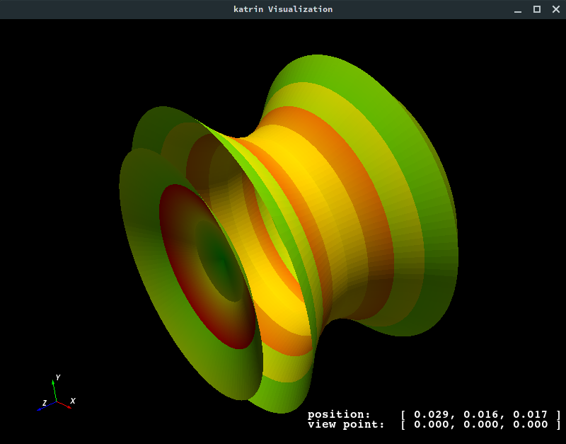

Additional Simulation Tools#
The main application for simulations is Kassiopeia. The XML interface allows flexible configuration that is suited
to many tasks. However, sometimes a more direct approach to certain investigations is needed. This is typically the
case during simulation design and debugging, and for field calculations that do not require a full-scale simulation. In
the following, additional tools that are included with Kassiopeia, KEMField and KGeoBag are presented.
On this page
Geometry viewers#
The geometry viewwers are intended to help with constructing and optimizing a simulation geometry that is typically used with Kassiopeia and KEMField. In most cases, the simulation requires a sophistocated geometry setup where additional tools are beneficial.
GeometryDumpprints information about the selected geometry elements to the terminal. This provides a quick method to access positions and rotations of any elements placed in the global coordinate system. The output is constructed in XML_ format, which can be further processed by external software.GeometryVieweropens a VTK visualization window showing the geometry in a 3D view. In the case that appearance definitions are embedded in the configuration file (via the<appearance .../>element), the shown geometry elements will be displayed accordingly.GeometryViewerROOTopens a ROOT visualization window showing the geometry in a 2D view. Spaces are shown as green boxes, surfaces as black lines. In order to project the geometry onto a 2D plane, the center point and direction of the plane must be defined. By default, the ROOT viewer draws the geometry in the Y-Z plane.
Usage#
All listed programs will show a brief usage summary if called without arguments. The applications are called with a configuration file name and a valid geometry path, e.g.:
GeometryViewer QuadrupoleTrapSimulation.xml 'world/@electrode_tag'
Below is an example of the VTK geometry viewer:

In case of the ROOT viewer, additional options can be passed to define the 2D view plane:
GeometryViewerROOT QuadrupoleTrapSimulation.xml 'world/@electrode_tag' 'world/@magnet_tag' --plane=XZ
Below is an example of the ROOT geometry viewer:

As shown above, it is possible to specify multiple geometry paths as well.
Advanced visualization#
Note that in addition to these geometry viewers, Kassiopeia also supports to define visualizations in the configuration file directly so that no additional commands are necessary. For details see Visualization Techniques.
Mesh viewers#
The mesh viewers are intended to help with constructing and optimizing an electrostatic geometry that is provided to KEMField. In this case a mesh needs to be defined according to the selected symmetry level. The viewers show the defined mesh in a VTK window, coloring each mesh element individually.
AxialMeshVieweropens a visualization window showing the axial mesh. A corresponding mesh must be defined in the configuration file with the<axial_mesh .../>element.MeshVieweropens a visualization window showing the asymmetric (3D) mesh. A corresponding mesh must be defined in the configuration file with the<mesh .../>element.
Usage#
All listed programs will show a brief usage summary if called without arguments. The viewers are called with a configuration file name and a valid geometry path, e.g.:
AxialMeshViewer QuadrupoleTrapSimulation.xml 'world/@electrode_tag'
In this case, the geometry path selects all elements with the tag electrode_tag, which in this geometry corresponds to all electrode elements. Note that because the configuration file is processed before the mesh viewer visualization, there may be additional messages or windows shown (e.g. the internal VTK geometry viewer). Below is an example of the axial mesh viewer:
{kind=link}
Field calculation#
Although Kassiopeia is quite powerful in terms of configuration options, sometimes it is necessary to calculate the electric or magnetic field at one or more defined points in the geometry. This is especially useful to compare different geometry setups, or during the design stage when full-scale simulations are not yet feasible. The field calculation tools are intended to help with these tasks.
Several programs are available for working with electric fields:
SimpleElectricFieldCalculatorcalculates the electric field and potential at a single point in the global coordinate system, and prints the results to the terminal.SimpleElectricFieldCalculatorAlongZAxiscalculates the electric field and potential at several points spread along the z-axis, defined by a start and stop position on the z-axis and a distance between points. The results are printed to the terminal and saved to a output text file.SimpleElectricFieldCalculatorOverXYplanecalculates the electric field and potential at several points spread over the xy-plane, defined by a position on the z-axis, a maimum radius, and a distance between points. The results are printed to the terminal and saved to a output text file.SimpleElectricFieldCalculatorAlongFieldlinecalculates the electric field and potential along a field line, which is calculated with the help of Kassiopeia using a magnetic trajectory. In principle this can be done through the Kassiopeia XML interfaces, but this program provides a convenient method for a simple field line calculation. The results are printed to the terminal and saved to a output text file.SimpleElectricFieldCalculatorFromFiletakes coordinates from a given input text file and calculates the electric field and potential at each point. The results are printed to the terminal and saved to a output text file.
For working with magnetic fields, the same programs are available under the adapted name SimpleMagneticFieldCalculator
and so on. In addition, there is:
SimpleMagneticGradientCalculatorcalculates the magnetic field and its gradient at a single point in the global coordinate system, and prints the results to the terminal.
Usage#
All listed programs will show a brief usage summary if called without arguments. For example, the
SimpleElectricFieldCalculatorAlongZaxis will show a message:
usage: ./SimpleElectricFieldCalculatorAlongZaxis <config_file.xml> <z1> <z2> <dz> <output_file.txt> <electric_field_name1> [<electric_field_name2> <...>]
which indicates that at least 6 arguments are required: the name of a configuration file with at least one defined electric field; the start and stop position and step distance on the z-axis; the name of an output file; and the name of an electric field. If multiple fields are specified, their contributions will be summed up.
Simulation tools#
Finally, some helper tools are provided with Kassiopeia that can be used together with simulations.
ROOTFileMergecombines several simulation output files into a single file with all runs/events combined. This is useful in the case of Monte-Carlo simulations, where Kassiopeia is executed several times with the same or slightly different settings. Although the individual output files could be analyzed separately, sometimes it is beneficial to combine all results into a single file that can then be analyzed in a single go. The program simply takes a list of input files, followed by the name of an output file that will be created.ParticleGeneratorprovides a quick method to generate particles as specified in a configuration file, without running a simulations. This is useful for the design of simulations, and to compare and validate the generators used by the simulations. The program generates an output text file that contains one line for each generated particle, with information about its position, energy, and so on.
All listed programs will show a brief usage summary if called without arguments.